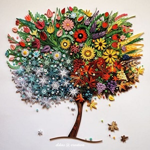

Dụng cụ cần có để làm quilling đơn giản
* Que cuốn giấy quilling
Để làm quilling giấy xoắn, không thể không có que cuốn giấy - trợ thủ đắc lực giúp bạn có những chiếc quilling đa dạng. Có 2 loại que cuốn bạn có thể chọn lựa:
- Que cuốn giấy quilling đầu to: loại này có khe để kẹp giấy xoắn, rất thích hợp cho người mới bắt đầu học làm quilling. Tuy loại này dễ dùng nhưng phần tâm giấy xoắn thường bị to.
- Que cuốn giấy quilling đầu kim cực nhỏ: thường sử dụng khi đã thành thạo trong việc làm quilling
Hiện nay có rất nhiều loại que cuốn giấy được kết hợp từ cả 2 loại trên, hoặc que quilling bằng điện. Nếu không mua, bạn cũng có thể tự chế cho mình chiếc que cuốn bằng đầu kim khâu cũ, tăm nhọn…
* Giấy xoắn quilling
Là những dải giấy được cắt nhỏ, kích thước khoảng 1cm trở lên được cắt sẵn với nhiều màu sắc khác nhau. Bạn có thể tìm mua ở các cửa hàng lưu niệm rất sẵn có, hoặc tận dụng giấy báo, bìa cũ khi bắt đầu học.
* Keo sữa
Nếu là tín đồ yêu thích làm đồ handmade, hẳn bạn không còn lạ gì với keo sữa. Tuy nhiên, khi sử dụng quilling để làm keo sữa, bạn cần lưu ý như sau:
- Không sử dụng quá nhiều keo sữa để dán sẽ khiến giấy bị mềm, ướt và cong
- Nếu muốn tránh không lấy quá nhiều keo, bạn nên chọn loại hộp có đầu phun nhỏ, rồi dùng đầu kim tiêm gắn vào ống keo.
- Do keo sữa rất dễ khô và vón cục, khi sử dụng nên pha với một chút nước và sau khi sử dụng bạn nên đậy kín để bảo quản.
- Keo sữa thường dùng trong công cuộc làm đồ handmade
* Kéo cắt giấy
Để làm quilling, bạn chỉ cần sử dụng kéo mũi nhọn (dùng để bấm hoặc tỉa các chi tiết nhỏ) và kéo răng cưa để tạo viền cho dải giấy.
Kéo mũi nhọn dùng để cắt tỉa các chi tiết nhỏ
Các dụng cụ khác để học cách làm quilling cơ bản
Bộ định vị quilling và khung: giúp bạn dễ dàng làm quilling với kích thước to nhỏ khác nhau
Dao trổ
Lược quilling, kim định vị
Nhíp gắp
Cách làm Quilling cơ bản
Để làm được những sản phẩm quilling phức tạp thì các bạn cần nắm được những bước làm quilling cơ bản nhất. Bắt đầu các bạn cần thực hiện hình xoắn tròn sao cho thật chặt tay là được bởi vì chỉ cần làm được bước này thì chúng ta có thể dễ dàng hơn trong việc biến tấu thành các sản phẩm mới một cách đơn giản nhất.
Làm quilling tròn chặt: các bạn cần đặt chiếc que cuốn giấy vào vị trí của đầu dải giấy, tiếp theo dùng một ngón cái cùng với ngón trỏ của mình để có thể bắt đầu thực hiện cuộn những dải giấy ở xung quanh bên ngoài chiếc que. Các bạn cứ tiến hành như vậy cho đến khi nào hết thì sẽ thu được một hình xoắn giấy dạng tròn chặt như thế này.
Chỉ cần thay đổi lực của tay để vặn và điều chỉnh độ căng của lõi giấy, những loại cuộn giấy khác nhau đã được tạo ra. Có một số loại cơ bản khác như cuộn lõi chặt, cuộn lõi lỏng, cuộn giọt nước, giọt nước hơi cong một nửa, cong chữ S, cuộn vuông, cuộn hình tim, cuộn mắt..
Một số mẫu mọi người có tham khảo

Về đầu trang